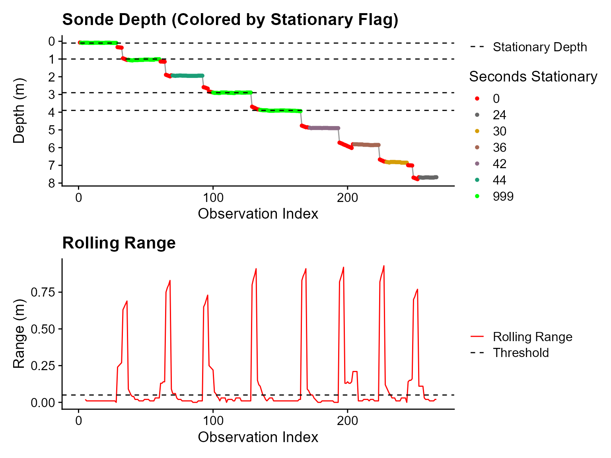
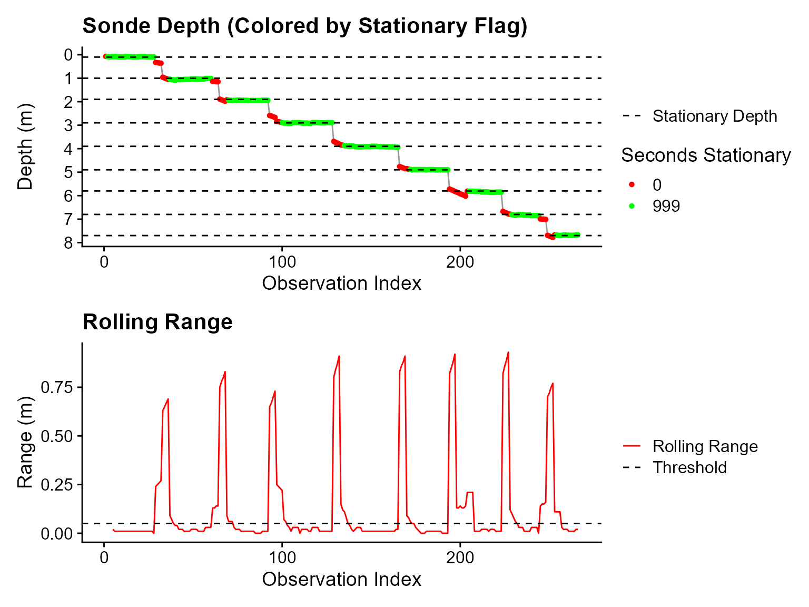
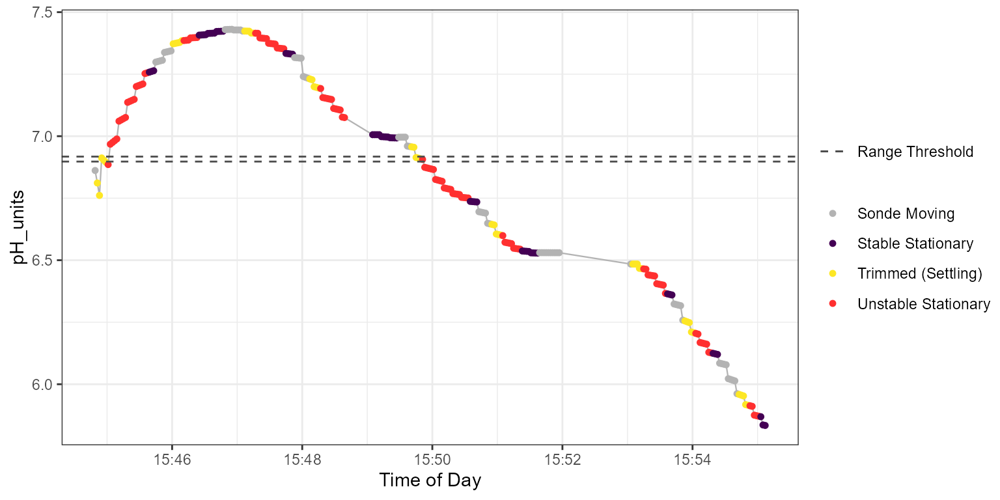
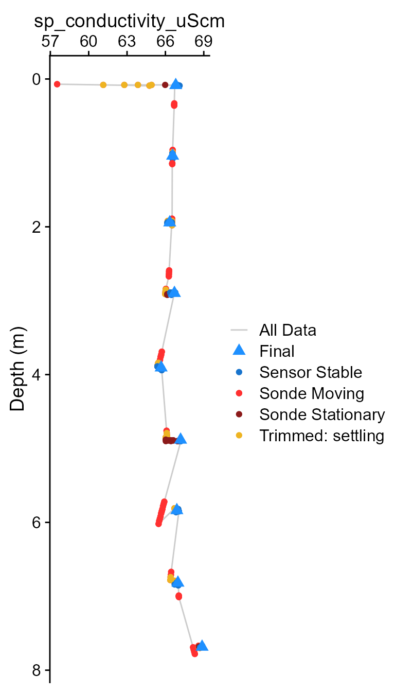
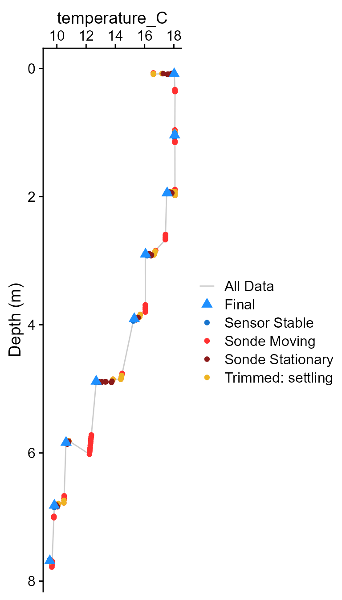
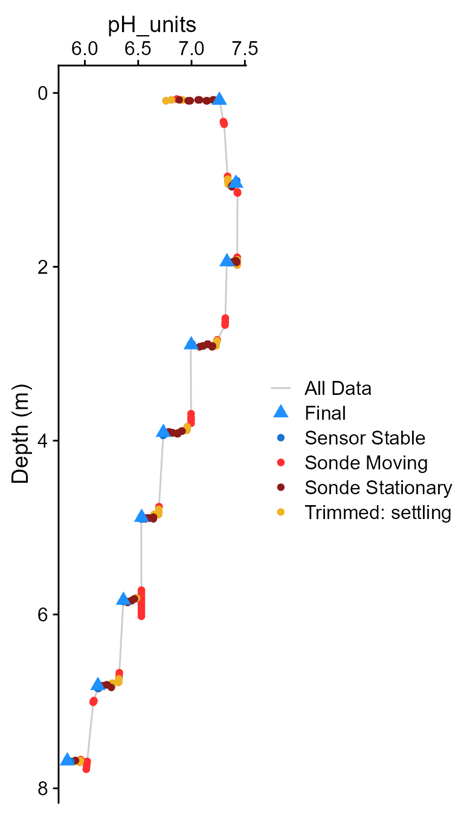
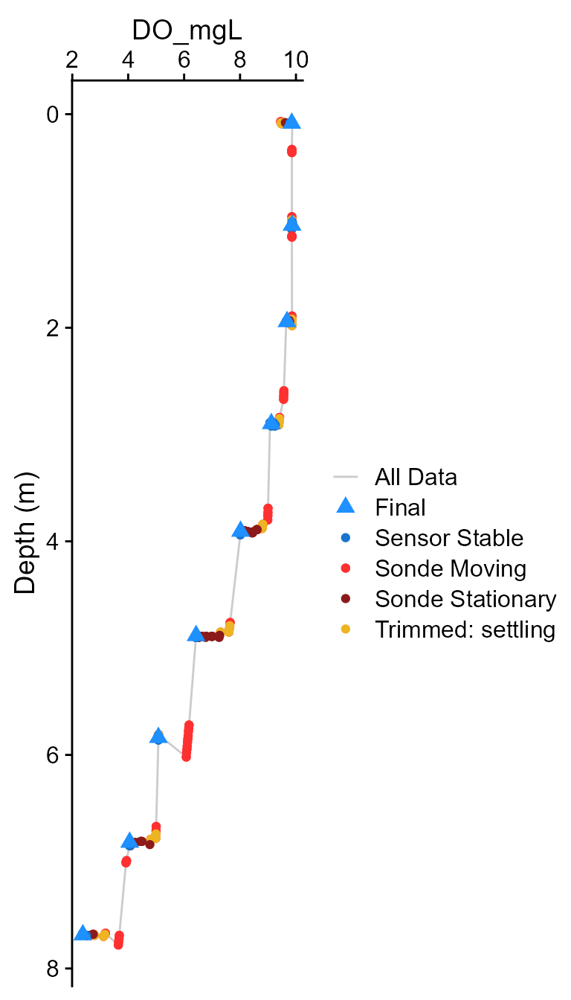
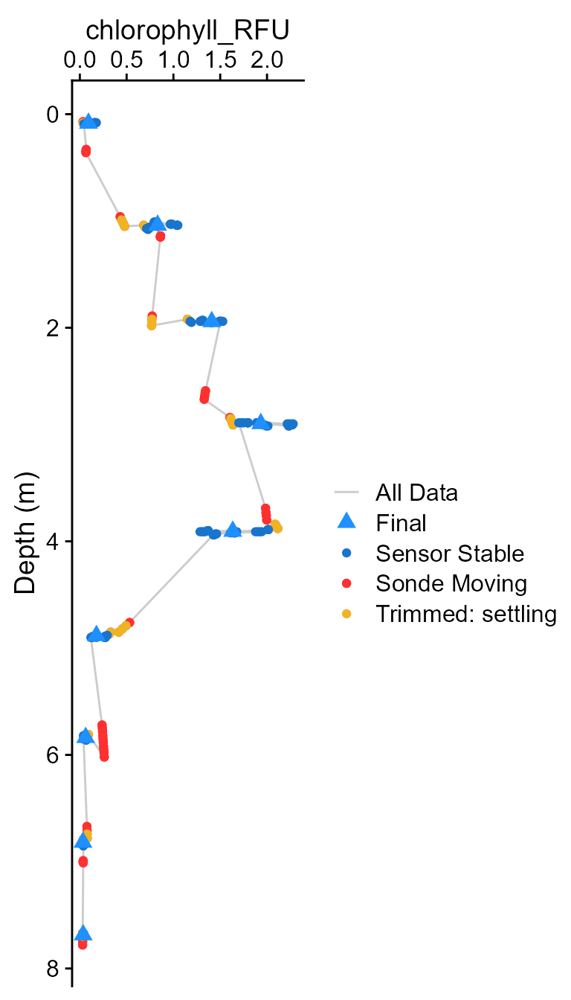
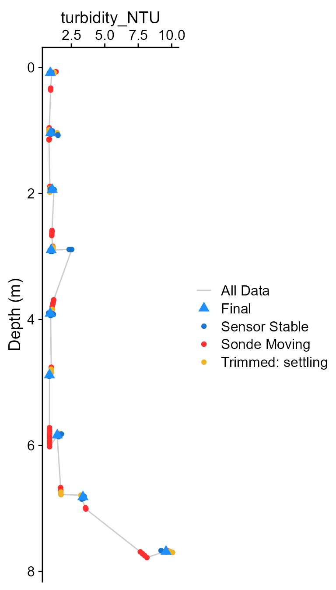
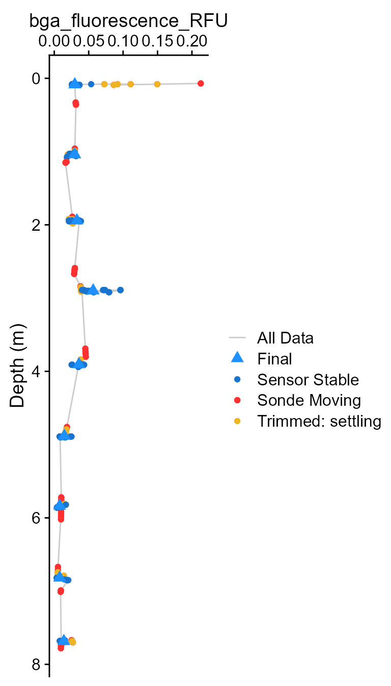

TROLL Profiles Quick Start
TROLL-QuickStart.RmdQuick Start
library(ImportUtils)
# Example data (replace with your own file path)
path_to_raw <- system.file("extdata", "TROLL_exdata.csv", package = "ImportUtils")
## Run the full workflow
dat <- TROLL_profile_compiler(
path = path_to_raw,
stn_secs = 24 # adjusted for this dataset
)
# View summarized output
summary <- dat$Summary_Data
summary
#> # A tibble: 9 × 8
#> stationary_depth sp_conductivity_uScm temperature_C pH_units DO_mgL
#> <dbl> <dbl> <dbl> <dbl> <dbl>
#> 1 0.085 66.8 18.0 7.26 9.85
#> 2 1.04 66.6 18.1 7.41 9.86
#> 3 1.94 66.3 17.5 7.33 9.68
#> 4 2.90 66.7 16.1 7.00 9.09
#> 5 3.91 65.7 15.3 6.74 8.02
#> 6 4.88 67.2 12.7 6.53 6.43
#> 7 5.84 66.9 10.6 6.36 5.08
#> 8 6.82 67.0 9.83 6.12 4.05
#> 9 7.68 68.9 9.52 5.84 2.38
#> # ℹ 3 more variables: chlorophyll_RFU <dbl>, turbidity_NTU <dbl>,
#> # bga_fluorescence_RFU <dbl>NOTE: This example uses stn_secs = 24
because the included dataset has short stationary periods.
 Figure 1: Example output showing compiled profile data
for BGA (RFU).
Figure 1: Example output showing compiled profile data
for BGA (RFU).
If results are not as expected:
- Missing depths –> decrease
stn_secs - Noisy non-optical parameter data –> adjust
stbl_range_thresholds - Want to inspect behavior –> rerun with
plot = TRUE
For more control, see the Tuning Troll Workflow vignette.
Overview
The AquaTROLL utility functions in ImportUtils provide
tools for processing electronic logs generated by the VuSitu app. The
primary workhorse is TROLL_profile_compiler(), which wraps
the functionality of the supporting functions into a single interface
for batch processing.
Each component function used within
TROLL_profile_compiler() is also exported individually.
This allows users to inspect intermediate steps, troubleshoot issues,
and better understand how the data are transformed throughout the
workflow.The workflow is:
- Read Raw Data (
TROLL_read_data()) - Standardize column names and required data
(
TROLL_rename_cols()) - Detect and flag stationary periods in sonde data
(
is_stationary()) - Detect and flag stable data by sensor type
(
TROLL_sensor_stable()) - Summarize stationary + stable data
(
TROLL_summary_stable())
These functions assume that raw VuSitu .html files have
already been converted to .csv format. This vignette walks
through a complete example workflow using the individual functions,
followed by the wrapper function. The goal is to demonstrate the purpose
of each step and help users make informed decisions for efficient and
accurate data processing.
Step 1: Read Raw Data
The TROLL_read_data() function reads raw
.csv files exported from VuSitu. It uses pattern matching
to locate the “Date Time” column and determine where the data begin.
The function checks whether seconds are included in the datetime values and attempts to standardize formatting if needed. Because the “Date Time” column is used to identify the start of the dataset, it must be present in the input file.
path <- system.file(
"extdata",
"TROLL_exdata.csv",
package = "ImportUtils"
)
dat_read <- TROLL_read_data(path )
# dplyr::glimpse(dat_read)At this stage, the data are imported without interpretation or
modification beyond basic formatting. Note here the format of the
Date Time and Depth (m) columns.
Step 2: Standardize Column Names
Downstream functions rely on column names being named consistently;
this function enforces standard (canonical) naming conventions via
troll_column_dictionary.
dat_rename <- TROLL_rename_cols(
df = dat_read,
colname_dictionary = troll_column_dictionary
)
# dplyr::glimpse(dat_rename)Column renaming is achieved by pattern matching. If unknown columns
are detected an error will be displayed and the dictionary
should be updated if these columns represent new sensor data. It is
possible to work around missing names by creating a unique dictionary
object and passing it to the colname_dictionary argument
using troll_column_dictionary as a template and adding
additional rows as required.
missing_dictionary_row <- troll_column_dictionary[-5,] # Drops "pH_units"
# The error when a column is missing from dictionary
dat_rename <- TROLL_rename_cols(
df = dat_read,
colname_dictionary = missing_dictionary_row
)
#> Error in apply_trollname_schema(normalized_df, dictionary = colname_dictionary, : Unknown column(s) detected:
#> - pH (pH)
#>
#> Update `troll_column_dictionary` if these are valid new sensors.
new_row <- troll_column_dictionary[5,]
new_row
#> # A tibble: 1 × 6
#> pattern canonical required meta core_param stbl_calc
#> <chr> <chr> <lgl> <lgl> <lgl> <lgl>
#> 1 "^pH \\(pH\\)$" pH_units FALSE FALSE TRUE TRUE
good_dictionary <- missing_dictionary_row |>
dplyr::add_row(new_row)
# Apply updated dictionary
dat_rename <- TROLL_rename_cols(
df = dat_read,
colname_dictionary = good_dictionary
)
names(dat_rename)
#> [1] "DateTime" "sp_conductivity_uScm" "temperature_C"
#> [4] "pH_units" "DO_mgL" "DO_per"
#> [7] "chlorophyll_RFU" "turbidity_NTU" "bga_fluorescence_RFU"
#> [10] "depth_m" "pH_mV" "depth_to_water_m"Columns associated with the TROLL COMM are automatically detected
using an internal dataset of Comm serial numbers. The Comm temperature
column is renamed to avoid conflicts with water temperature. Comm
columns are stripped away with metadata whent
strip_metadata = TRUE.
The trollcomm_serials arguments allows users to use a
custom vector of serial numbers associated with Troll-Comm units, if the
internal dataset is out of date.
Metadata columns (e.g. “latitude”, “longitude”, “battery” etc.) are
removed by default, but can be retained by toggling
strip_metadata == FALSE. The inclusive list of metadata
columns are defined within the column dictionary:
troll_column_dictionary[troll_column_dictionary$meta,]
#> # A tibble: 9 × 6
#> pattern canonical required meta core_param stbl_calc
#> <chr> <chr> <lgl> <lgl> <lgl> <lgl>
#> 1 "^External Voltage" external… FALSE TRUE FALSE FALSE
#> 2 "^Battery Capacity" battery_… FALSE TRUE FALSE FALSE
#> 3 "^Pressure \\(psi\\)" water_pr… FALSE TRUE FALSE FALSE
#> 4 "^Barometric Pressure \\(mm Hg\… barometr… FALSE TRUE FALSE FALSE
#> 5 "^Barometric Pressure \\(mbar\\… barometr… FALSE TRUE FALSE FALSE
#> 6 "^Latitude" latitude… FALSE TRUE FALSE FALSE
#> 7 "^Longitude" longitud… FALSE TRUE FALSE FALSE
#> 8 "^Marked$" marked_f… FALSE TRUE FALSE FALSE
#> 9 "^Trollcom_temperature_C$" Trollcom… FALSE TRUE FALSE FALSE
dat_meta <- TROLL_rename_cols(
df = dat_read,
strip_metadata = FALSE # Retain metadata columns
)
names(dat_meta)
#> [1] "DateTime" "sp_conductivity_uScm"
#> [3] "temperature_C" "pH_units"
#> [5] "DO_mgL" "DO_per"
#> [7] "chlorophyll_RFU" "turbidity_NTU"
#> [9] "bga_fluorescence_RFU" "depth_m"
#> [11] "pH_mV" "depth_to_water_m"
#> [13] "external_voltage_V" "battery_capacity_per"
#> [15] "barometric_pressure_mbar" "Trollcom_temperature_C"
#> [17] "latitude_deg" "longitude_deg"
#> [19] "marked_flag"For troubleshooting, the verbose argument may be toggled
to allow printing of messages to the console regarding presence/absense
of Troll-Comm columns, and which parameters were detected.
dat_echo <- TROLL_rename_cols(
df = dat_read,
verbose = TRUE
)
#> Schema validation passed: 19 columns recognized.
#> The CSV has Columns:
#> - DateTime
#> - sp_conductivity_uScm
#> - temperature_C
#> - pH_units
#> - DO_mgL
#> - DO_per
#> - chlorophyll_RFU
#> - turbidity_NTU
#> - bga_fluorescence_RFU
#> - depth_m
#> - pH_mV
#> - depth_to_water_mStep 3: Detect Stationary Periods in Sonde Depth Data
Once naming schema are standardized, the next step is to detect
periods when the sonde was stationary in the water column. The
is_stationary function calculates a right-justified
(backwards looking) rolling range across a window, and assigns
is_stationary_status based on the amount of time the sonde
remains within a depth_range_threshold.
Once stationary periods are detected, is_stationary
appends stationary_dapth as the mean of the stationary
observation depths.
dat_stationary <- is_stationary(
df = dat_rename,
depth_col = depth_m,
datetime_col = DateTime,
depth_range_threshold = 0.05,
stationary_secs = 60,
rolling_range_secs = 10,
drop_cols = TRUE,
plot = FALSE
)
#> Warning: Inconsistent sampling intervals detected.
#> Dominant interval: 2 secs (99.2% of records) used for `samp_int`.
#> Interval distribution:
#> sampling_interval n
#> 2 263
#> 26 1
#> 66 1
# dplyr::glimpse(dat_stationary)NOTE The “Warning: Inconsistent sampling intervals…” is created by an internal helper that extracts sampling interval from the DateTime column. What it’s telling you is that there are inconsistent temporal “jumps” in the data, usually caused by the Troll-Comm glitching. This is only an issue if the “Dominant interval” is not detected as what it should be (2 seconds in this example is correct).
There are 3 critical inputs for tuning the function:
1) `depth_range_threshold`: the allowable rolling range that triggers the right-most observation
of the rolling window to be flagged as stationary.
2) `stationary_secs`: the minimum time required for a stationary block to be flagged with `is_stationary_status` == 999.
3) `rolling_range_secs`: sets the rolling range window size. is_stationary_status is critical for tuning. - The
999 flag indicates that the stationary block was longer
than stationary_secs. - Periods shorter than
stationary_secs are flagged with their duration in
seconds.
To visualize this, toggle on optional plotting:
dat_stationary <- is_stationary(
df = dat_rename,
depth_range_threshold = 0.05,
stationary_secs = 45, # Relatively long required stationary period
rolling_range_secs = 10,
plot = TRUE # Toggle optional plotting
)
#> Warning: Inconsistent sampling intervals detected.
#> Dominant interval: 2 secs (99.2% of records) used for `samp_int`.
#> Interval distribution:
#> sampling_interval n
#> 2 263
#> 26 1
#> 66 1
#> Warning: Removed 4 rows containing missing values or values outside the scale range
#> (`geom_line()`).
Note here that there are a number of stationary periods labelled with values < 999, equal to the number of seconds in the stationary period .Also note the dashed lines. These equate to the extracted
stationary_depths used downstream for stability
determinations.
Depending on the depths targeted, we can adjust critical parameters to mark additional depths as stationary:
dat_stationary <- is_stationary(
df = dat_rename,
depth_range_threshold = 0.05,
stationary_secs = 20, # reduce required stationary time
rolling_range_secs = 10,
plot = TRUE # Toggle optional plotting
)
#> Warning: Inconsistent sampling intervals detected.
#> Dominant interval: 2 secs (99.2% of records) used for `samp_int`.
#> Interval distribution:
#> sampling_interval n
#> 2 263
#> 26 1
#> 66 1
#> Warning: Removed 4 rows containing missing values or values outside the scale range
#> (`geom_line()`).
Now we have flagged stationary depth from 0 - 8 meters at 1.0 m intervals.
Note that the function extracts actual depth as the mean of stationary depths.
Step 4: Detect Stable Sensor Data Inside Stationary Blocks
NOTE This function handles one column of sensor data
at a time. It is iteratively applied accross all parameter column within
TROLL_profile_compiler.
Individual sensors behave inconsistently in field data. In order to
extract the best possible final value,
TROLL_profile_compiler uses range and slope across
stationary blocks of data to evaluate if data are stable, using the
maximum number of observations that meet criteria to calculate a summary
statistic.
Note This function requires that
is_stationary_status has been appended to the data by
is_stationary.
For an individual parameter:
dat_stable <- TROLL_sensor_stable(
df = dat_stationary,
value_col = pH_units,
settling_secs = 10,
min_median_secs = 5,
slope_thresh = 0.05,
range_thresh = 0.02,
drop_cols = TRUE,
verbose = FALSE,
plot = TRUE # Optional plotting toggled ON
)
dat_stable |>
dplyr::select(DateTime, stationary_depth,is_stationary_status,pH_units_stable)
#> # A tibble: 266 × 4
#> DateTime stationary_depth is_stationary_status pH_units_stable
#> <dttm> <dbl> <dbl> <lgl>
#> 1 2025-05-13 15:44:49 NA 0 NA
#> 2 2025-05-13 15:44:51 0.085 888 NA
#> 3 2025-05-13 15:44:53 0.085 888 NA
#> 4 2025-05-13 15:44:55 0.085 888 NA
#> 5 2025-05-13 15:44:57 0.085 888 NA
#> 6 2025-05-13 15:44:59 0.085 888 NA
#> 7 2025-05-13 15:45:01 0.085 999 FALSE
#> 8 2025-05-13 15:45:03 0.085 999 FALSE
#> 9 2025-05-13 15:45:05 0.085 999 FALSE
#> 10 2025-05-13 15:45:07 0.085 999 FALSE
#> # ℹ 256 more rowsThe optional plot aids in understanding what the function is doing.
First, across the entire stationary block data range and slope are
calculated. Then, observations are dropped iteratively one at a time
until both slope_thresh and
range_thresh are met. The remaining observations in the
stationary block are all marked as <value_col>_stable
== TRUE.
Note the use of time on the x-axis. Also - two solid
lines indicate the range_thresh input by user. This is a
guide for visualization only.
Critical inputs are::
1) `slope_thresh`: the slope threshold that must be met for stability.
2) `range_thresh`: the data range threshold that must be met for stability.
3) `min_secs`: Minimum duration of data to be retained regardless if `slope_thresh` and `range_thresh` are met. Note stationary_status must be
999 from is_stationary() for stability to be
examined. If depths are missing consider tuning inputs to
is_stationary to extract more fully stationary blocks.
Step 5: Summarize Stable Data
With data flagged as stable in hand, the
TROLL_stable_summary function compiles the output into a
single value (default = median) for each stationary depth:
dat_summary <- TROLL_stable_summary(
df = dat_stable,
group_col = stationary_depth
)
dat_summary
#> # A tibble: 9 × 2
#> stationary_depth pH_units
#> <dbl> <dbl>
#> 1 0.085 7.26
#> 2 1.04 7.41
#> 3 1.94 7.33
#> 4 2.9 7.00
#> 5 3.91 6.74
#> 6 4.89 6.53
#> 7 5.84 6.36
#> 8 6.83 6.12
#> 9 7.68 5.84Step 6: Putting it all Together
Each of the steps above may be executed using the
TROLL_profile_compiler function. This is a high level
wrapper that automatically detects parameters using the
troll_colname_dictionary and iterates over them with
TROLL_sensor_stable to provide unique stability flags for
each paramter.
Default values for individualrange_thresh by parameter
are given by stability_ranges:
#> # A tibble: 8 × 3
#> param range slope
#> <chr> <dbl> <dbl>
#> 1 sp_conductivity_uScm 0.5 1
#> 2 temperature_C 0.15 0.25
#> 3 pH_units 0.1 0.05
#> 4 DO_mgL 0.15 0.15
#> 5 turbidity_NTU 4 0.5
#> 6 chlorophyll_RFU 1 0.5
#> 7 bga_fluorescence_RFU 1 0.5
#> 8 ORP_mv 10 1These may be updated by passing a named numeric vector
custom_ranges <- c('DO_mgL' = 0.2, 'pH_units' = 0.15)
dat_final <- TROLL_profile_compiler(
path = path,
depth_col = depth_m,
datetime_col = DateTime,
stn_depthrange = 0.05,
stn_secs = 24, # Note use of value from tuning above
stn_rollwindow_secs = 10,
stbl_min_secs = 5,
stbl_settle_secs = 10,
stbl_range_thresholds = custom_ranges, # Provide updated custom ranges
summarize_data = TRUE, # Output will be a list w/ both flagged and summary data
drop_cols = TRUE,
plot = c(Final = FALSE, Stationary = FALSE)
)
#> Warning: Inconsistent sampling intervals detected.
#> Dominant interval: 2 secs (99.2% of records) used for `samp_int`.
#> Interval distribution:
#> sampling_interval n
#> 2 263
#> 26 1
#> 66 1
#> Warning in TROLL_sensor_stable(df = dat_stationary, value_col = !!param_i, : turbidity_NTU slope exceeded threshold at:
#> 2.9 m (0.716 units/min)
#> 6.83 m (-0.554 units/min)
#> 7.68 m (-1.673 units/min)
#>
#> Consider validating data or adjusting trimming.If summarize_data is FALSE, output will
just return the data with a “_stable” flag column for each parameter. If
TRUE a list is returned with both flagged and summary
data:
flag_data <- dat_final$Flagged_Data
summary <- dat_final$Summary_Data
summary
#> # A tibble: 9 × 8
#> stationary_depth sp_conductivity_uScm temperature_C pH_units DO_mgL
#> <dbl> <dbl> <dbl> <dbl> <dbl>
#> 1 0.085 66.8 18.0 7.26 9.85
#> 2 1.04 66.6 18.1 7.41 9.86
#> 3 1.94 66.3 17.5 7.33 9.68
#> 4 2.9 66.7 16.1 7.00 9.11
#> 5 3.91 65.7 15.3 6.74 8.02
#> 6 4.89 67.2 12.7 6.53 6.43
#> 7 5.84 66.9 10.6 6.36 5.08
#> 8 6.83 67.0 9.83 6.12 4.05
#> 9 7.68 68.9 9.52 5.84 2.38
#> # ℹ 3 more variables: chlorophyll_RFU <dbl>, turbidity_NTU <dbl>,
#> # bga_fluorescence_RFU <dbl>The optional plotting should be used to visually ensure that each parameter was compiled as expected. These plots are the classical view of profile data, with data values on the x axis and depth on the y-axis.
#> Warning: Inconsistent sampling intervals detected.
#> Dominant interval: 2 secs (99.2% of records) used for `samp_int`.
#> Interval distribution:
#> sampling_interval n
#> 2 263
#> 26 1
#> 66 1
#> Warning in TROLL_sensor_stable(df = dat_stationary, value_col = !!param_i, : turbidity_NTU slope exceeded threshold at:
#> 2.9 m (0.676 units/min)
#> 7.68 m (-1.673 units/min)
#>
#> Consider validating data or adjusting trimming.






If any individual parameter looks incorrect, it is recommended to
move outside of TROLL_profile_compiler and work in the
individual workflow to tune, and bring those values back to the
wrapper.